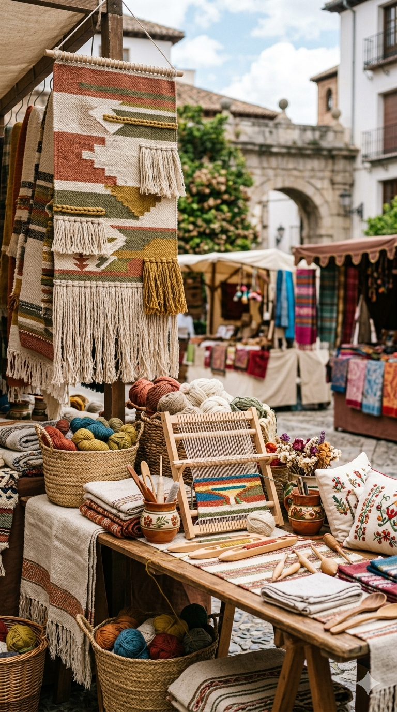

Jornadas
de Artesanía
TRADICIÓN · DISEÑO · OFICIO
Un encuentro para celebrar el valor de lo hecho a mano y el talento que mantiene vivas nuestras raíces.
16 — 18 OCTUBRE 2026

TRADICIÓN · DISEÑO · OFICIO
Un encuentro para celebrar el valor de lo hecho a mano y el talento que mantiene vivas nuestras raíces.
